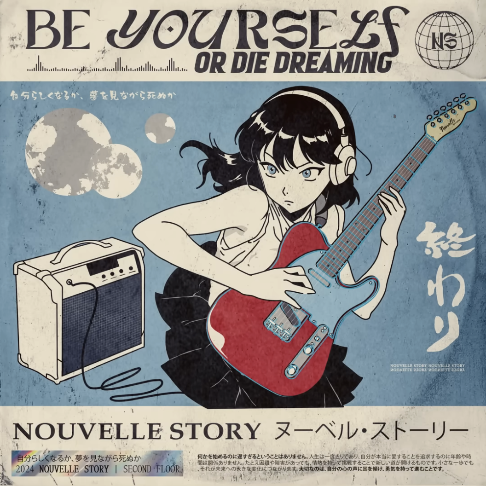

my name is ruru and welcome to my website!! i made this because i came across the indie web
on youtube and saw all these awesome websites and i decided. huh. i wanna make one myself.
please keep in mind that i am still quite a noob to coding and html and css and js so please excuse if there are wonky things here ;-; i am doing my best.
im literally not joking when i say the code behind this is a hot mess. i don't even know how its working. i brute forced like half of this.
also, apologies for it being super mobile unfriendly!! im too lazy rn but maybe someday.
navigation is in the top left box if you'd like to explore!!!
current fav song (click to play):
Be Yourself Or Die Dreaming Nouvelle Story

about ME!
[ ruru | any pronouns | eng/中文 ]
hellooooo...
this is now the THIRD TIME im writing this about me. each time i look at the last one, i just cringe out of my skin and
feel the need to scrap all of it because theres no wayyy i was so uncool back then. i think in the future i'll think this current
about me also sucks just going along w the pattern, but i'm gonna try having this one at least stick for a bit longer and document
the more stable things abt myself (unlike my music taste, which has changed again!)
i think that math is super cool and fun!!! i love the satisfaction of solving a problem and being like ohhh that's how that works.
i think that while i "discovered" my love for math only these past few months, that i've always had an inherent joy in solving problems.
i also like drawing but i've been doing it less of it nowadays because life throws u curveballs man. creative writing too, but drawing
has def been a bigger thing in my life overall. a bit sad but its alright.
my goal for now and probs for ever is simply to learn more about the world and our society and the way things work!!! i want to be more
informed on things and be able to talk about them and also make educated actions!!!!
i'd also like to just be more... out there in general. i am a slight hermit socially in that i keep to a close group of ppl and don't rlly
adventure outside my comfort zone, but i think i'm missing out on a lot, and also giving less back to the world in doing so. anyways, i think
these goals reflect my core values and won't change much over time. thank u for coming to my ted talk.
other random facts about me:
- i really like chocolate strawberries
- my fav type of tea is earl grey
- i love to hoard stickers and never use them (its a problem)
- current fav music artist: louie zong or masayoshi takanaka or smth, idrk
current obsession: House MD (TV)
its about this doctor named Gregory House (yes thats his real name) and hes brilliant diagnostician but also a jerk and disabled so he has to walk
with a cane, and he also is addicted to vicodin. every episode he goes around solving medical mysteries while also committing medical malpractice and gets
away with it because he actually helps the patient survive. not even joking, he has his diagnostic team of cameron, chase, and foreman break-and-enter into the patients house every episode to look for clues.
he has only one true friend named James Wilson who is the head of oncology and who is also genuinely insane except he's nice
so you don't notice it as much, but hes been divorced 3 times and almost lost his job because he defended house against a multimillionaire. hilson4life or something. everyone on this show
is insane and its great! (note: might make proper shrine for this sometime) (update as of dec 2025: i have not watched house since september but im keeping this up bc i think its funny)
ormm so i lowkey don't really like the old blog anymore because im realizing its kinda cringe.... like lots of it is just
random stupid facts that are really common knowledge and make me seem stupid lmao, or its just useless lists of surface level facts
which are also stupid. if u wanna see it, its all commented out in the actual html file
but i am not gonna have it actually here anymore
instead, the plan is to try to improve my language abilites!! by doing like a trilingual blog with english chinese and french!!! mostly for myself
but if someone stumbles upon it, then that'd also be pretttyyy coooollll. gonna link it right here: